ORIGIN VCO
Overview
An oscillator turns a steady pitch setting or a changing control voltage into a repeating audio waveform. ORIGIN offers three starting spectra. Triangle has relatively little upper harmonic energy, sawtooth is bright and dense, and pulse changes its harmonic balance as its width changes.
Controls and connections
The upper selector shifts the oscillator by octaves from 32′ through 2′, and PITCH tunes within that register. WAVE selects triangle, sawtooth, or pulse at OUT. The two pitch modulation inputs, CV 1 and CV 2, are summed after their individual amount controls. With an amount knob fully clockwise, its input follows the 1 V/oct standard. An increase of 1 V raises the pitch by one octave. Lower settings reduce the pitch change per volt. Use one input at full amount for a note sequence and the other at a low amount for vibrato. PW sets the resting pulse width, and PWM IN moves the width around that setting. Pulse-width modulation applies to the pulse waveform.
Try it
Select pulse and set PW near the middle. Patch CYCLE LFO on LOW with LEVEL at 1/10 into PWM IN. Send OUT through FORM VCF and listen for movement in the harmonics while the oscillator pitch stays steady.
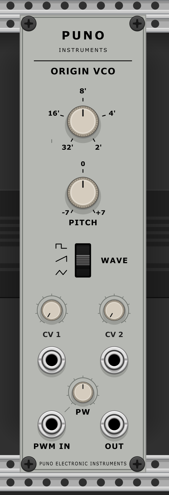
FORM VCF
Overview
FORM is a resonant four-pole low-pass filter with an input mixer. A low-pass filter progressively attenuates frequencies above its cutoff. Resonance emphasizes the area around that cutoff, so a sweep can bring out successive harmonics before they fade away.
Controls and connections
Set the balance of up to three sources with the knobs above IN 1–3. They enter a shared filter, so CUTOFF and RESONANCE act on the whole mix. Use LPF for the main low-pass signal. The HPF output adds high-pass filtering to that same signal at 1K, 2K, or 5K. With a suitable cutoff setting, the two stages can leave a narrower band of the source audible. At OFF, HPF carries the same signal as LPF. That selector affects only HPF.
Each CV 1–3 knob determines how much its input moves the cutoff and in which direction. The center gives zero modulation. The three contributions add, so a short envelope and a slow LFO can shape the same sweep on different time scales.
Try it
Patch ORIGIN VCO on sawtooth into IN 1 and raise its level. Take LPF to your listening chain, then start with a low CUTOFF and a little RESONANCE. Patch CONTOUR ADSR into CV 1 and increase the amount clockwise. Shorten DECAY until the bright opening settles into a darker held tone.
Important notes
The CUTOFF tooltip shows the nominal frequency set by the knob and the effective frequency after CV and the sample-rate limit. The two values can differ even with the CV inputs unpatched.
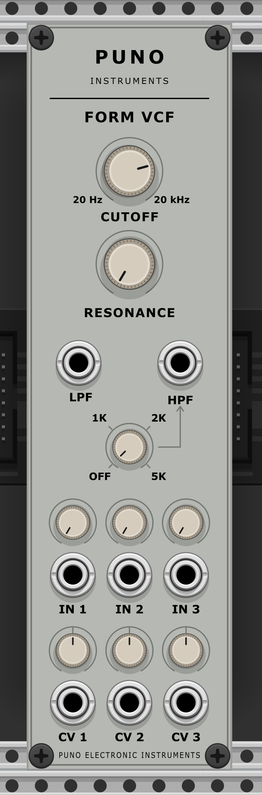
DYN VCA
Overview
A voltage-controlled amplifier turns a control voltage into changes in level. DYN combines three audio sources before applying a single gain stage, so a blend of oscillators and noise can follow one amplitude envelope.
Controls and connections
Set the source balance with the knobs above IN 1–3 and take the controlled mix from OUT. GAIN sets how open the VCA is before modulation. The CV 1–3 amounts are bipolar, with zero contribution at the center. Positive and negative contributions add to GAIN, and the combined control range runs from silence to full gain. A raised GAIN lets a signal through between notes or leaves room for negative CV to close the VCA.
RESPONSE changes how control level becomes gain. LIN tracks the control level directly. EXP applies a cubic curve, giving lower gain at intermediate control levels and making low-level changes more gradual.
Try it
Mix a sawtooth from ORIGIN VCO with a little HISS NOISE at IN 1 and IN 2. With GAIN down, open CV 1 clockwise and patch CONTOUR ADSR OUT + into it. Use the same envelope to compare LIN and EXP at OUT, listening to how the noise and oscillator emerge together.
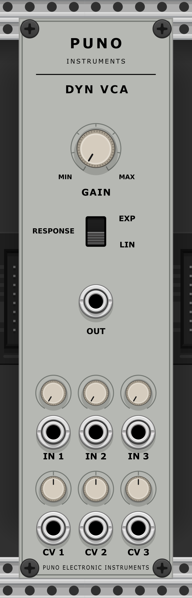
CONTOUR ADSR
Overview
An ADSR envelope converts a gate into a shaped control voltage. Attack and decay shape the start of the note, sustain sets the level while the note is held, and release controls its tail. The same envelope can articulate amplitude, filter cutoff, or both.
Controls and connections
Patch a held note signal into GATE, or press MANUAL GATE. Either keeps the envelope gated. ATTACK sets the rise, DECAY sets the fall to the SUSTAIN level, and RELEASE controls the return to zero after both gate sources are off. OUT + provides a positive envelope up to +10 V. OUT − provides its polarity-inverted copy. Use the inverse where a destination should fall as the positive envelope rises.
Try it
Send STRIDE SEQUENCER GATE to GATE and OUT + to DYN VCA CV 1. Turn the VCA amount clockwise and keep its GAIN low. A fast attack, medium sustain, and short release make discrete notes. Lengthen the release until adjacent notes begin to overlap.
Important notes
A rising edge at RETRIG restarts the attack from the current envelope level while GATE or MANUAL GATE is active.
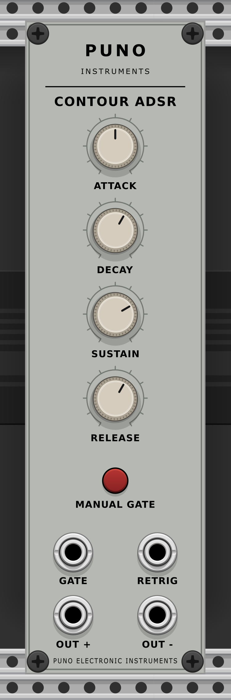
CYCLE LFO
Overview
A low-frequency oscillator produces a repeating control voltage. Sine and triangle waves make continuous sweeps, a saw gives a ramp with an abrupt return, and a pulse switches between two levels. Two opposite outputs let one cycle drive related changes in different directions.
Controls and connections
Select LOW (0.05–1.8 Hz), MID (0.2–9 Hz), or HIGH (0.5–30 Hz) with RANGE, then tune within that range with FREQUENCY. FREQ CV doubles the rate for each added volt and halves it for each volt removed, within the range limits. Select the shape with WAVEFORM. LEVEL selects full amplitude or 1/10 for smaller changes at the destination. OUT + and OUT − carry opposite versions of the same cycle.
A rising edge at TRIG restarts the waveform and its fade timer. FADE-IN sets how long the output takes to reach the selected amplitude.
Try it
Choose LOW and triangle. Patch OUT + to one FORM VCF cutoff CV input and OUT − to a second filter in another voice. Use positive modulation amounts on both filters. Send a phrase-start gate to TRIG and raise FADE-IN so the two sweeps build gradually in opposite directions.
Important notes
Hover over FREQUENCY to read the effective rate in Hz, including the effect of FREQ CV and the selected range limits.
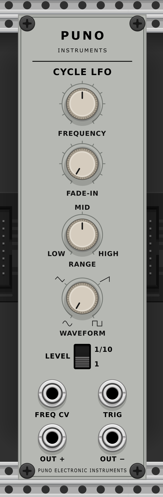
FUSE RING
Overview
A ring modulator multiplies two signals sample by sample. In bipolar multiplication, like polarities give a positive result and opposite polarities give a negative result. With two pure tones, the multiplication generates a component at the sum of their frequencies and another at the absolute difference. These sidebands can sound bell-like or metallic when the two tones are tuned to intervals that do not line up with a shared harmonic series.
Controls and connections
Patch an audio or control signal into X IN and another into Y IN. Either input can play either role because the product is symmetrical. With one audio signal and a slow bipolar signal, the slow signal controls the audio level and reverses its polarity over part of the cycle. OUT is X × Y / 5, limited to ±10 V. Both inputs need a signal for a nonzero output.
Try it
Patch two triangle waves from ORIGIN VCO into X IN and Y IN. Start at matching pitches, take OUT to your listening chain, and slowly retune the second oscillator with PITCH. Listen for a slow difference tone or beating near unison and brighter sidebands as you open up the interval. The extra harmonics in a triangle wave can generate more sidebands than a pair of pure sine tones.
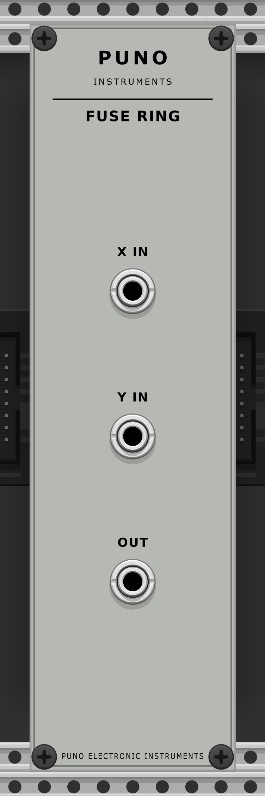
HISS NOISE
Overview
White and pink noise distribute energy differently across the spectrum. White noise has roughly equal power in equal-width frequency bands. Pink noise has roughly equal power per octave, giving its upper octaves less weight relative to white noise. Both can supply broadband material for percussion or a layer beneath pitched sounds.
Controls and connections
WHITE 1 and WHITE 2 are duplicate taps of the same white-noise source. PINK 1 and PINK 2 duplicate the pink-noise source. Patch both jacks in a pair when two processing paths need the same signal.
Try it
Send WHITE 1 to DYN VCA IN 1, and shape it with a short CONTOUR ADSR envelope. Patch the VCA output into FORM VCF and compare its LPF and HPF outputs as you tune the filter. Swap to PINK 1 to audition the same patch with less high-frequency emphasis.
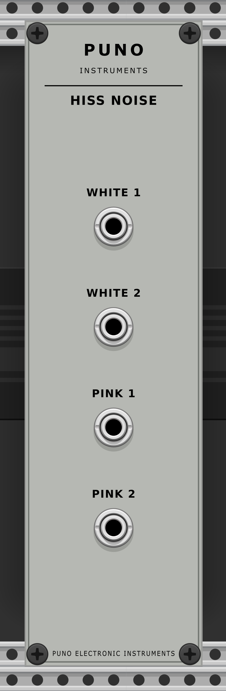
DRIFT S&H
Overview
A sample-and-hold grabs the instantaneous value of a signal on a clock edge and holds it until the next sample. Sampling noise makes random steps. Sampling a repeating waveform can produce a repeating or slowly drifting pattern, depending on how its rate relates to the clock.
Controls and connections
Feed the source into SIGNAL IN and take held values from S&H OUT. An unpatched SIGNAL IN selects the internal white noise. RATE sets the internal sampling clock, or patch CLOCK IN to sample in time with another module. LAG softens transitions between held values, turning sharp steps into rounded movement. RATE spans 0.1–50 Hz and LAG spans 0–5 seconds.
Try it
Leave SIGNAL IN unpatched and feed STRIDE SEQUENCER GATE into CLOCK IN. Patch S&H OUT to FORM VCF CV 1 at a modest amount. Each step gets its own cutoff. Compare a stepped pattern at minimum LAG with the rounded transitions at a higher setting.
Important notes
CLOCK IN takes over sampling when patched. CLOCK OUT always carries the internal clock set by RATE.
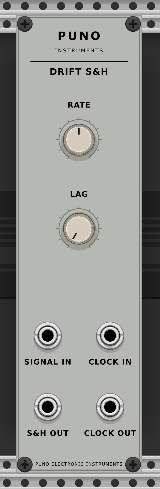
BLEND MIXER
Overview
BLEND adds weighted audio or control signals. Its inverted outputs make the same summed signal useful for opposite modulation, and two internally supplied voltages let the mixer add a fixed offset to a moving signal.
Controls and connections
Patch to IN 1–4 and use LEVEL 1–4 to scale the contributions before they are added. OUT 1 and OUT 2 give duplicate sums, and INV 1 and INV 2 give duplicate polarity-inverted sums. Inverting the mix also inverts any fixed offset. The output range is limited to ±10 V.
Try it
Patch CYCLE LFO OUT + into IN 1 and raise LEVEL 1. Keep IN 3 empty and turn up LEVEL 3 to lift the modulation above its original center. Send OUT 1 to FORM VCF CV 1 and listen as the offset raises the center of the sweep.
Important notes
When unpatched, IN 3 supplies +10 V and IN 4 supplies −10 V before their level controls. Use their knobs to add an offset, or turn both down to mix only the patched signals.
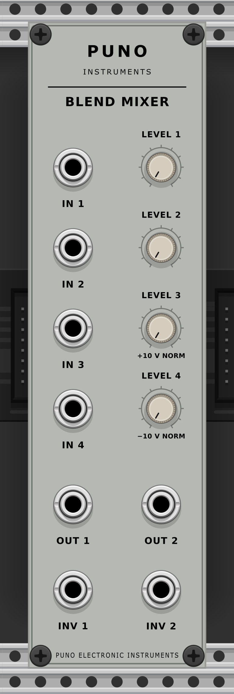
GLIDE PORTA
Overview
GLIDE is an exponential slew processor. When an input jumps to a new value, the output moves toward it quickly at first and then settles more gradually. Applied to pitch CV, this is portamento, the audible slide between notes. Applied to other CV, it is slew limiting. For example, it can make a filter cutoff move gradually between two settings.
Controls and connections
Patch a changing voltage into IN and take the result from OUT. Raise TIME to slow both rising and falling transitions. It sets the exponential time constant from 0.01 to 3 seconds. The LED grows brighter with the TIME setting. For notes to reach their target before the next step, choose a setting that suits the sequence speed.
Try it
Send PUNO CHROMA QUANT CV OUT into GLIDE IN, then patch GLIDE OUT into ORIGIN VCO CV 1 with its amount fully clockwise. Use a sequence with a few wide note jumps. Raise TIME until those jumps become audible slides.
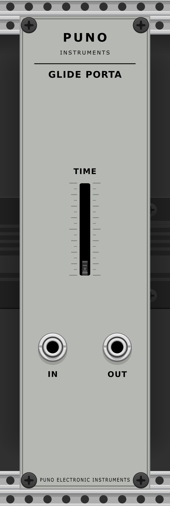
PASS GATE
Overview
PASS is a voltage-controlled signal gate. An open path passes the input signal at its original level, and a closed path outputs zero. The two independent paths can switch clocks, control voltages, or audio according to other events in the patch.
Controls and connections
For GATE 1 or GATE 2, patch the signal to IN and take OUT from that section. OPEN indicates that the path is enabled. With one control cable, use CV + to open when its voltage is high or CV − to open when its voltage is low. With two cables, the inputs work together as an enable condition. See the thresholds below when combining them.
Try it
Patch a clock to GATE 1 IN and a phrase-length gate to its CV +. Take OUT to a drum trigger input. The clock reaches the drum while the phrase gate is high. Use the second section to enable a different percussion pattern on another phrase.
Important notes
With only CV + connected, it opens above 3 V. With only CV − connected, it opens below 1.5 V. With both connected, CV + must be above 3 V and CV − must be at least 1.5 V. With neither connected, the path stays closed.
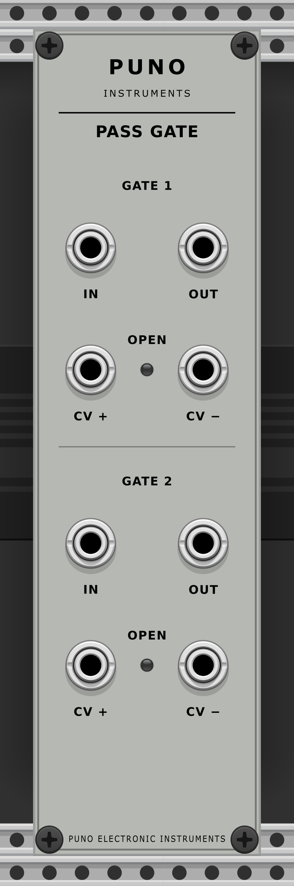
BRANCH MULTIPLE
Overview
BRANCH distributes a signal to two destinations per section. The copies carry the same voltage, so a pitch or timing source can coordinate multiple modules.
Controls and connections
Patch a signal into any IN 1–6 and take its two copies from OUT 1 and OUT 2 in the same section. Each section is independent and mono. Use a fresh section for each signal you want to distribute.
Try it
Split STRIDE SEQUENCER GATE. Patch one copy into CONTOUR ADSR GATE and the other into CYCLE LFO TRIG. The same step can open the voice and restart its modulation cycle.
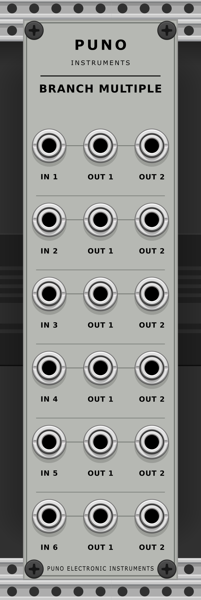
SWIRL PHASER
Overview
A phaser blends the input with a phase-shifted copy. Where the two signals partially cancel, notches appear in the spectrum. SWIRL uses six phase-shift stages and can move those notches with its own triangle LFO or an external voltage.
Controls and connections
Patch audio into IN and listen at OUT with EFFECT on. FREQ sets the center of the sweep, MOD sets how far it travels, and RES feeds part of the processed signal back to make the sweep more pronounced. LFO RATE sets the internal sweep speed from 0.02 to 10 Hz. LFO + and LFO − both swing from −5 V to +5 V with opposite polarity. Patching CV IN replaces the internal sweep source for the phaser, while the LFO outputs remain available. EFFECT off passes the dry signal.
Try it
Send a sustained ORIGIN VCO sawtooth into IN. Set a slow LFO RATE, raise MOD, and turn up RES a little. Then feed CONTOUR ADSR OUT + to CV IN to move the notches with each note instead of a continuous sweep.
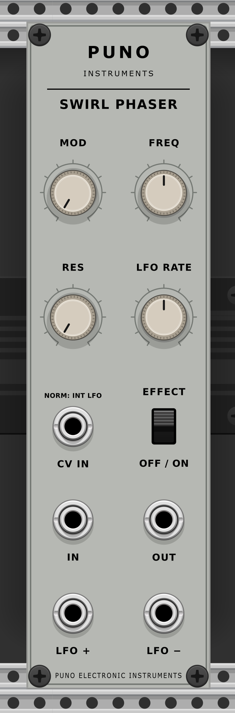
ECHO DELAY
Overview
ECHO mixes a 1–7 ms delayed copy with the original. At these short times the two signals reinforce some frequencies and cancel others, creating comb filtering. At 1–7 ms, the delayed sound blends with the original as coloration. Moving the delay time produces flanging, with the repeats too close together to hear as separate rhythmic echoes.
Controls and connections
Patch audio into IN and use TIME to place the comb peaks and notches. RES adds delayed signal back into the delay, strengthening the coloration. MOD sets how far modulation can move the delay around TIME. LFO RATE sets the internal triangle LFO from 0.02 to 10 Hz. LFO + and LFO − both swing from −5 V to +5 V with opposite polarity. CV IN replaces the internal modulation source for the delay. OUT is an equal dry/delayed mix with EFFECT on and carries the dry signal with it off.
Try it
Send HISS NOISE WHITE 1 into IN. Listen at OUT, raise RES slightly, and sweep TIME to hear how it colors a broadband signal. Add a little MOD at a slow LFO RATE and let the comb pattern move on its own.
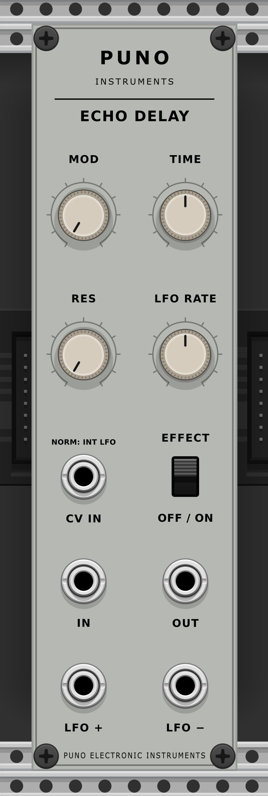
SHIFT GATE DELAY
Overview
SHIFT detects a rising threshold crossing and schedules a new gate. Its delay and output duration are independent, which lets one incoming trigger place an event later in the beat and give it a suitable length.
Controls and connections
Patch the source to IN and set THRESHOLD below the peak of the trigger. DELAY determines how long SHIFT waits after the crossing, and TIME determines how long OUT stays high. THRESHOLD ranges from 0.3 to 5 V. DELAY and TIME each range from 0.3 ms to 6 seconds. The generated gate reaches +10 V. A longer input gate can initiate the same output pulse as a short trigger.
Try it
Split STRIDE SEQUENCER GATE with BRANCH MULTIPLE. Send one copy straight to a drum and the other into SHIFT. Patch SHIFT OUT to a second percussion voice, then adjust DELAY for a two-hit rhythm and TIME for a short trigger at the receiving module.
Important notes
The module ignores new rising edges while a delay is pending or an output pulse is active.
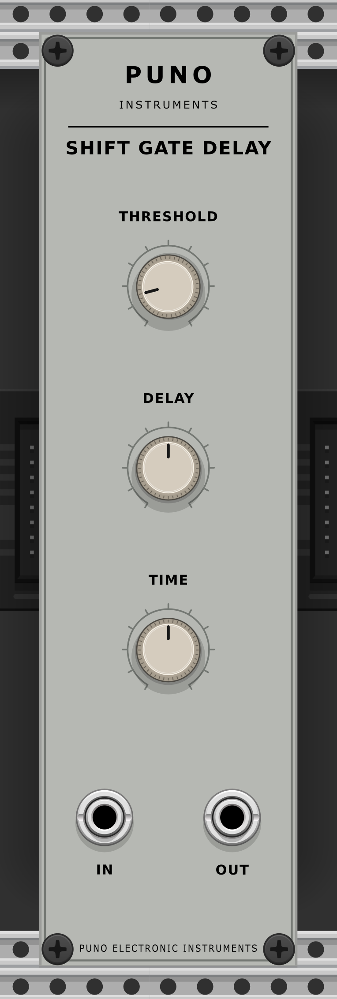
STRIDE SEQUENCER
Overview
A step sequencer turns knob settings into timed control voltages. STRIDE can produce two related patterns from the same step clock, or join its two rows into a longer pitch or modulation sequence. Separate gate and end-of-sequence outputs let that pattern articulate and coordinate other voices.
Controls and connections
Set each step in CH 1 and CH 2 from 0 to +5 V. In PARALLEL, the rows share a length of one to eight steps, set with STEPS, and appear at CV 1 and CV 2. In SERIAL, CV 1 plays eight steps of CH 1 followed by the number of CH 2 steps selected with STEPS. CV 2 continues through CH 2, cycling its eight values as the sequence advances.
In RUN MODE, choose REPEAT for continuous playback or SINGLE for one pass. Both use TEMPO, which can be modulated via TEMPO CV. In STEP, press START and advance with rising edges at STEP TRIG. The START/STOP control stops playback or starts from step 1.
DELAY smooths only CV 1, useful for sliding between pitch or modulation steps. GATE TIME sets the gate duty in the internal-clock modes. In STEP, GATE stays high for 50 ms after a step starts. A new step restarts that interval. TRIG OUT pulses at the end of the sequence.
Try it
Choose PARALLEL, REPEAT, and four STEPS. Patch CV 1 through PUNO CHROMA QUANT to ORIGIN VCO. Route CV 2 to FORM VCF CV 1 and GATE to CONTOUR ADSR. Set a pitch in the first row and a separate brightness for each pitch in the second row.
Important notes
Changing the run mode or the row configuration returns the sequence to step 1 while preserving the running or stopped state. STEP TRIG advances steps only in STEP. Earlier panels label this jack TRIG IN.
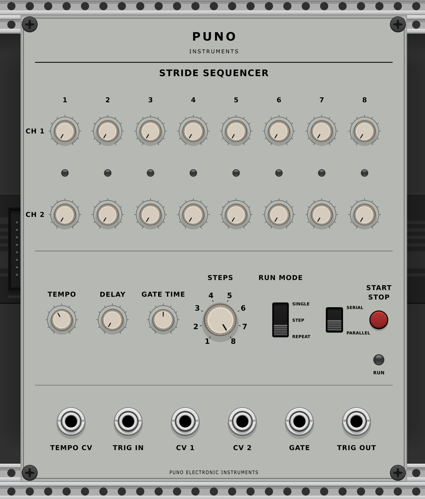
TONE EQ
Overview
TONE is a four-band parametric equalizer. Each band adjusts a selected part of the spectrum with its own center frequency, boost or cut, and bandwidth. Use a broad setting for tonal balance or a narrow one to target a ringing partial.
Controls and connections
Patch audio to IN and take either of the identical OUT 1 and OUT 2 signals. In each BAND, FREQ selects the center within the marked range, LEVEL boosts or cuts, and Q controls how tightly the change is focused around that center. The four bands cover 20–200 Hz, 100 Hz–1 kHz, 500 Hz–5 kHz, and 2–20 kHz. Each offers ±12 dB of gain and a Q range of 0.9–9. Higher Q makes a narrower adjustment. Toggle EQ and BYP to compare, use SIGNAL to confirm activity, and watch CLIP when boosting or feeding a hot signal.
Try it
Patch a resonant percussion voice into IN. Pick a band that covers the ringing frequency and use high Q with a small temporary boost. Sweep FREQ, then turn LEVEL below zero at the point where the ring stands out. Compare with BYP at the same downstream gain.
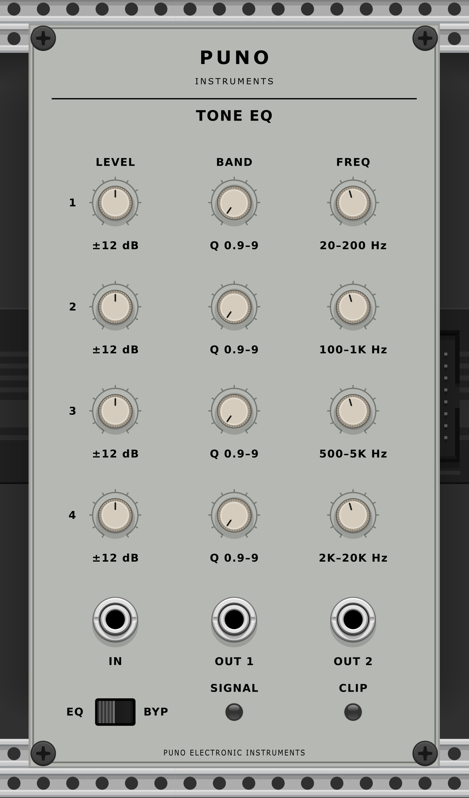
MAIN MIXER OUTPUT
Overview
MAIN sums four mono sources into a stereo mix. Each channel has its own level and pan, and the finished mix has separately adjustable master and monitoring outputs. A built-in sine tone provides a reference for tuning or checking the output path.
Controls and connections
Patch sources into IN 1–4. Unpatched inputs contribute no signal. Set each LEVEL fader for the balance you want. Its LED follows the fader setting. PAN uses equal-power panning to keep the combined output power consistent as you move a source from left to right. OSC FREQ selects OFF, 220, 440, or 880 Hz. OSC LEVEL blends that centered reference tone into the mix. MASTER sets the level at L / MONO and R. The PHONES control sets the level at the separate stereo PHONES jack.
Try it
Patch ORIGIN VCO into a channel. Select 440, raise OSC LEVEL just enough to hear the reference, then tune the oscillator until the beating slows. Switch OSC FREQ to OFF, add the other voices, and set the stereo balance using both master outputs.
Important notes
When R is unpatched, L / MONO carries the average of the left and right master signals. PHONES carries left and right on the first two channels of one Rack cable.
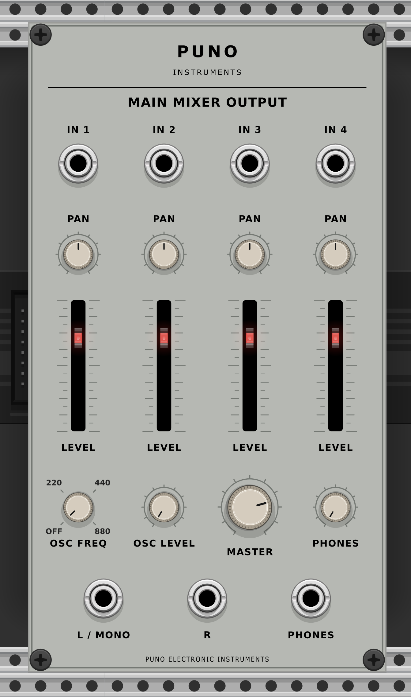
PULSE LOGIC
Overview
Logic turns gates into decisions about when events happen. AND detects an overlap, OR forms the union of two gate patterns, and NOT fills the gaps in a single pattern. The sections operate on gate levels, so the lengths of incoming gates shape the resulting rhythm.
Controls and connections
In AND, OUT is high only during the overlap of high signals at A and B. In OR, OUT is high as long as either A or B is high. Overlapping triggers therefore can merge into one longer gate. NOT drives OUT high while IN is low. Each section works independently.
Try it
Send PUNO RATIO DIV ÷2 to A of AND and a phrase enable gate to B. Patch OUT to a percussion trigger input. Change the length of the enable gate to hear how much of the divided rhythm gets through.
Important notes
An input goes high at +2 V or above and returns low below +0.1 V. Outputs are 0 V or +5 V. An unpatched input is low, so the NOT output is high with IN unpatched.
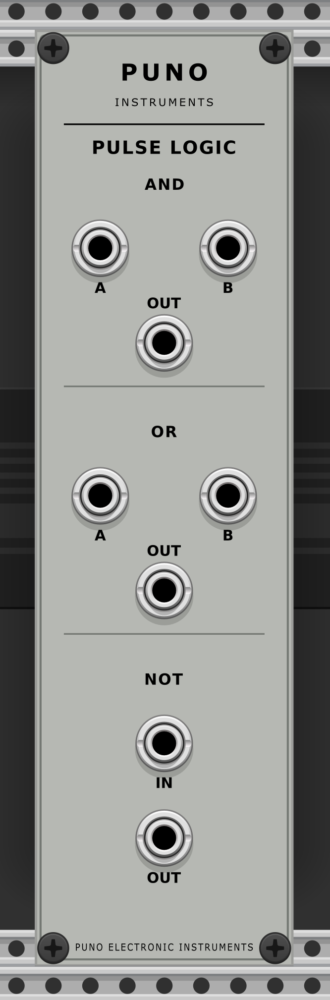
CHROMA QUANT
Overview
A pitch quantizer maps a continuous voltage to discrete notes. CHROMA uses the nearest semitone in the chromatic scale across two independent channels, making random or hand-set CV useful as pitch without requiring each source to land exactly on a note.
Controls and connections
Patch pitch CV into CV IN on A or B, then take the corresponding CV OUT to a 1 V/oct pitch input. Both channels use all 12 semitones per octave. A small margin around each decision point helps keep the pitch stable when the input hovers between adjacent notes.
Try it
Clock DRIFT S&H with STRIDE SEQUENCER GATE and send S&H OUT to CV IN on A. Patch CV OUT to ORIGIN VCO CV 1 with its amount fully clockwise. Use the same sequencer gate to trigger an amplitude envelope so the sampled notes and their articulation share a pulse.
Important notes
Each channel limits its input to ±5 V and reads only the first channel of a polyphonic cable. Unpatching CV IN sets the corresponding CV OUT to 0 V.
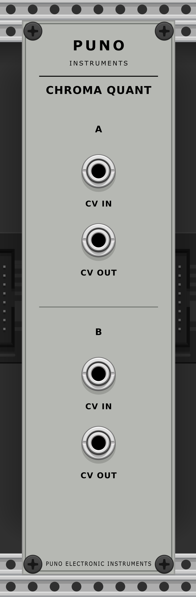
RATIO DIV
Overview
A clock divider derives slower gates from a stream of pulses. The outputs of RATIO are related by successive factors of two, giving several rhythmic layers that share a common timing reference.
Controls and connections
Send a regular pulse to CLOCK IN. ÷2, ÷4, ÷8, and ÷16 provide progressively slower gates, with an LED showing when each is high. Their rising edges can advance sequencers or trigger voices. Press RESET or send a gate to RESET IN to clear the count and set all outputs low together.
Try it
Send a master clock to CLOCK IN. Use ÷4 to advance STRIDE SEQUENCER in STEP mode after pressing START, and ÷16 to restart CYCLE LFO through TRIG. The melody advances more often than the modulation restarts.
Important notes
Reset takes priority over the clock and holds the outputs low as long as it is active. If the clock is still high on release, it needs to go low before the next rising edge counts.
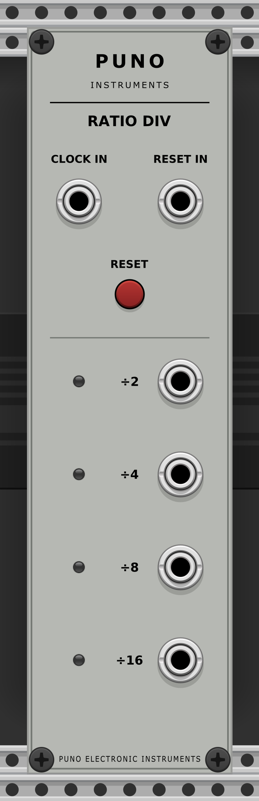
ROUTE SWITCH
Overview
ROUTE is a four-to-one sequential switch. It selects one source at a time, so a simple clock pattern can produce a repeating arrangement of signal sources. A brief crossfade between selections makes it practical to switch audio as well as CV.
Controls and connections
Connect sources to IN 1–4 and take the current selection from OUT. The lit LED identifies the input. STEP and a rising edge at CLOCK advance in order and wrap after IN 4. The RESET button or jack returns the selection to IN 1 and takes priority over stepping. Opening or initializing a patch also starts at IN 1.
Try it
Patch four slowly changing CVs into IN 1–4, then route OUT to a FORM VCF cutoff CV input. Clock ROUTE SWITCH with PUNO RATIO DIV ÷4. Send a phrase-start gate to RESET to reintroduce the same modulation source at the start of each phrase.
Important notes
A short crossfade of about 2 ms softens clicks between audio sources. It can also round gate edges. The switch reads only the first channel of a polyphonic cable, and an unpatched input contributes 0 V.
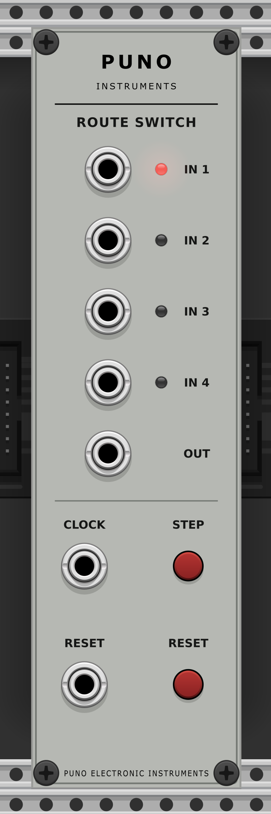
KELVOR DIST
Overview
KELVOR is a mono saturation effect that uses digital signal processing to reproduce the character of symmetrical germanium-diode clipping. As the input is driven harder, its peaks are compressed and the waveform gains harmonics. A fixed tone stage softens the upper end after clipping.
Controls and connections
Patch audio into IN and take the processed signal from OUT. DRIVE sets the signal level going into the clipping stage, so a hotter input generally saturates at a lower DRIVE setting. LEVEL adjusts the output after that stage. Use it to compare changes in tone at a similar listening level while you adjust DRIVE.
Try it
Send a triangle from ORIGIN VCO into IN and listen through MAIN MIXER OUTPUT. Raise DRIVE from its low setting, then reduce LEVEL as needed to match loudness. Listen to when the additional harmonics make the bass stand out against the other voices.
Important notes
KELVOR is mono. It reads the first channel of a polyphonic input.
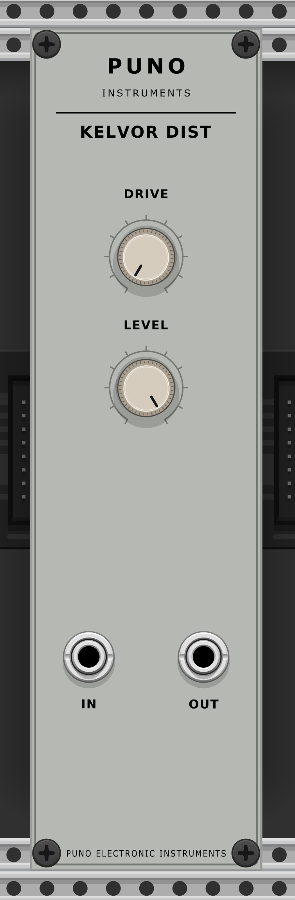
NASTRO TAPE
Overview
NASTRO TAPE is a 7 HP mono tape delay. Wow and flutter introduce slow and fast variations in the delay time, adding subtle pitch movement to the repeats.
Controls and connections
Patch audio into IN and take the mix from OUT. TIME sets the delay from 50 to 500 ms. FEEDBACK sets how much of the delayed signal returns to the recording path. RECORD LEVEL sets how much of the incoming signal is recorded. DRY sets the direct level and ECHO sets the delayed level in the output mix. Each of these four level controls ranges from 0 to 100%.
Try it
Patch a short melody into IN and monitor OUT through MAIN MIXER OUTPUT. Set TIME near 250 ms and start with FEEDBACK low. Raise it to hear several repeats, then adjust DRY and ECHO to balance the melody against its repeats. Leave a gap between phrases to hear the pitch movement in the echoes.
Important notes
NASTRO TAPE reads the first channel of a polyphonic input and outputs mono. Wow and flutter taper near the ends of the TIME range and are inactive at 50 and 500 ms.
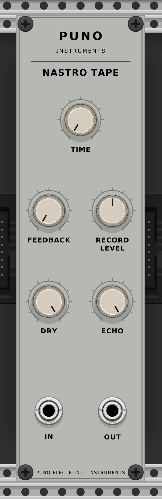
MOLLA VERB
Overview
MOLLA VERB is a 7 HP reverb with three virtual springs, a mono input, and a stereo return. The springs give plucks and percussion a lively tail, add space around sequences, and give sustained notes a textured decay.
Controls and connections
Patch a mono signal into AUDIO IN and take the stereo mix from LEFT OUT and RIGHT OUT. DWELL sets how hard the input drives the springs. TONE adjusts the brightness of the reverb return and is neutral at the center. DRY sets the direct signal level, and WET sets the reverb level.
Try it
Send a plucked sequence into AUDIO IN and patch both outputs to a stereo listening path. Adjust DWELL and WET to bring in the springs. Leave a gap between notes to hear the tail decay, then turn TONE down for a darker return or up for more brightness.
Important notes
AUDIO IN reads the first channel of a polyphonic cable. When RIGHT OUT is unpatched, LEFT OUT automatically averages the two wet channels and keeps the direct signal at the level set by DRY. Turning DWELL to zero lets the existing tail decay naturally.
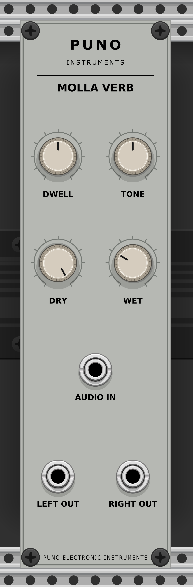